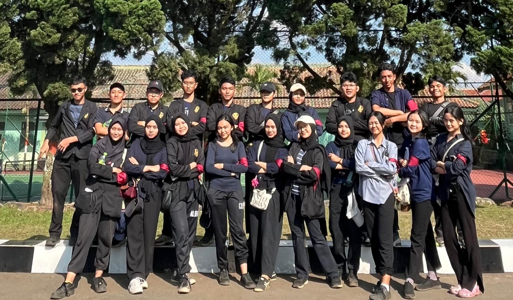
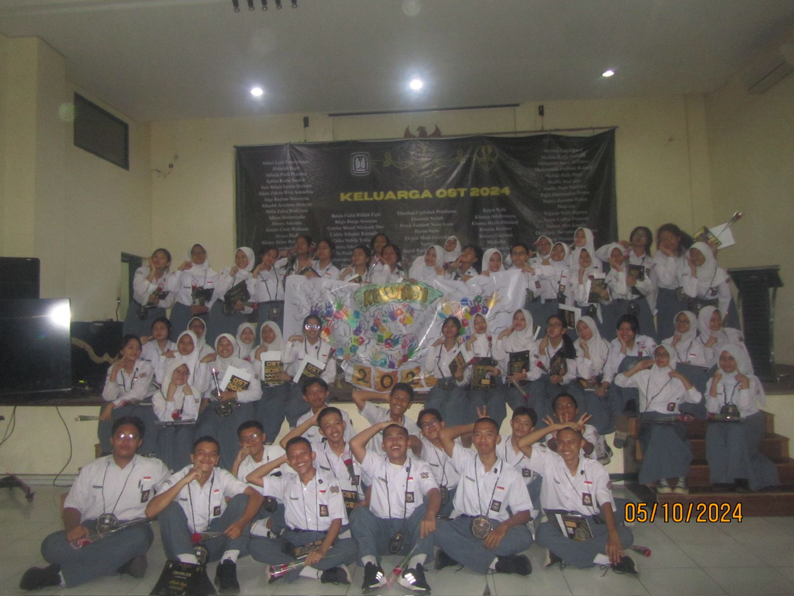
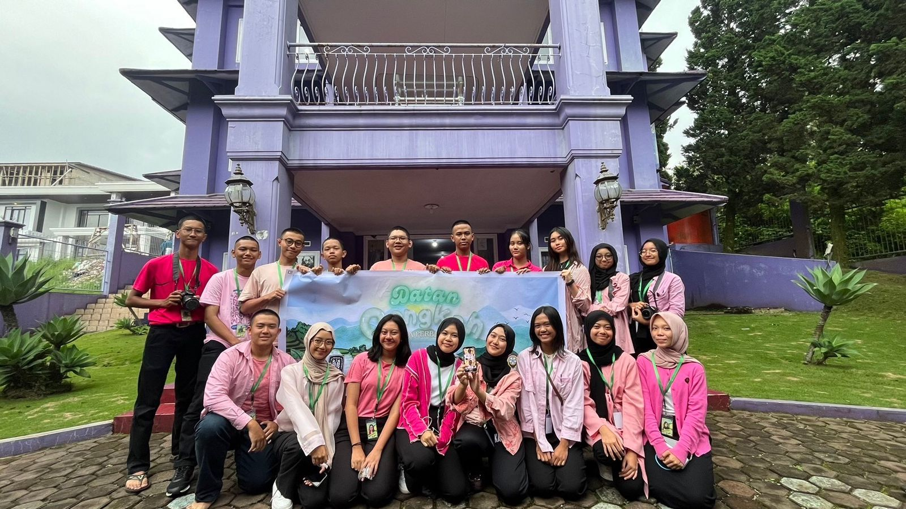

Bandung, 16 Oktober 2024 -
Perwakilan Kelas (PK) SMAN 3 Bandung sukses menyelenggarakan Screening Calon Ketua OSIS (Caketos) untuk periode 2024/2025. Acara yang digelar di aula sekolah ini merupakan tahapan awal dalam proses pemilihan Ketua OSIS yang baru, dengan tujuan memilih kandidat terbaik yang akan memimpin organisasi OSIS dalam setahun ke depan. Dari proses seleksi ini, terpilih sembilan nama yang akan melanjutkan ke tahap selanjutnya.
Adapun sembilan kandidat yang berhasil lolos screening adalah:
1. Hilary
2. Naufal
3. Raquilla
4. Neyna
5. Kahlaa
6. Rayhan
7. Keisya
8. Aura
9. Raisya
Proses screening yang berlangsung ketat ini melibatkan serangkaian tes, mulai dari uji visi dan misi, kemampuan berkomunikasi, hingga simulasi kepemimpinan. Panitia dari PK memastikan bahwa setiap calon ketua OSIS memiliki kualifikasi yang mumpuni, baik dari segi intelektual, etika, maupun kemampuan bekerja dalam tim.
Ketua Perwakilan Kelas (PK), Lintang Ramadhan, menjelaskan bahwa tahap screening ini dirancang untuk menyeleksi calon-calon terbaik yang siap memimpin OSIS dengan penuh tanggung jawab. "Kami menilai berdasarkan komitmen, kemampuan memimpin, serta visi mereka untuk OSIS dan sekolah. Screening ini penting untuk memastikan bahwa setiap kandidat memiliki kapabilitas untuk membawa perubahan positif," ungkapnya.
Selama screening, para calon ketua OSIS mempresentasikan visi dan misi mereka di hadapan para siswa, guru, serta tim penilai dari PK. Beberapa kandidat menyampaikan ide-ide inovatif terkait peningkatan kegiatan siswa, pengembangan ekstrakurikuler, serta perbaikan fasilitas sekolah. Salah satu kandidat, Hilary, mengusulkan adanya program pembinaan siswa berbasis bakat, sementara Naufal menekankan pentingnya kolaborasi antarorganisasi sekolah.
Siswa-siswa SMAN 3 Bandung turut antusias mengikuti proses screening ini. Mereka diberi kesempatan untuk bertanya langsung kepada para kandidat mengenai program kerja yang diusulkan dan bagaimana mereka akan mengatasi tantangan di sekolah. "Ini kesempatan bagi kami sebagai siswa untuk memilih pemimpin yang benar-benar memahami kebutuhan dan aspirasi kami," ujar salah satu siswa kelas 11 yang hadir dalam sesi tanya jawab.
Dengan terpilihnya sembilan kandidat ini, tahap selanjutnya dalam pemilihan Ketua OSIS akan dilanjutkan dengan debat terbuka dan kampanye, di mana para calon ketua OSIS akan menyampaikan program kerja secara lebih rinci kepada seluruh siswa SMAN 3 Bandung. Proses pemilihan Ketua OSIS periode 2024/2025 diharapkan dapat berlangsung demokratis dan menghasilkan pemimpin yang mampu membawa OSIS menuju prestasi yang lebih baik.
Acara screening Caketos ini mendapat apresiasi dari pihak sekolah, dengan harapan bahwa proses ini akan melahirkan ketua OSIS yang mampu menjadi panutan serta membawa perubahan positif bagi seluruh siswa dan komunitas sekolah.
[BERITA DUMMY]
|  |
Kegiatan LDKS Angkatan 2027 di Pusdikajen, LembangDiposting Oleh PK 26 & Magang LXII pada 10 Oktober 2024 |
|  |
Organization Skill Training Hari ke-5: Sekaligus Menutup Rangkaian Kegiatan OST yang Telah Berjalan Selama 2 BulanDiposting Oleh PK 26 pada 5 Oktober 2024 |
 |
Meriahnya Aspiday 2024 Festival dan KilasDiposting Oleh Aspirator 70 pada 24 Juni 2024 |
|  |
Hari Keakraban OSIS dan PK 2023Diposting Oleh PK 26 pada 20 Februari 2023 |